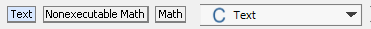
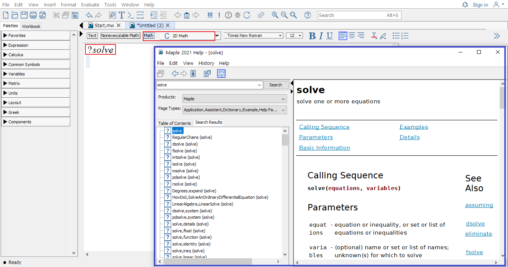

Topic 1 Basics in Maple
1.1 Getting Started
When Maple (say Maple2021) starts, you will see the following Maple Start document.

Maple start page screenshot
The palettes of Maple found on the left side of the Maple window contains expressions and symbols that you can used to quickly entry them.
The context panel of Maple found on the right side of the Maple window can be used to perform a wide variety of operations on an expression or its output.
If you already know what you want to do, then you may open a new document by clicking New Document icon in the start document. The following shows what an new (empty document) looks like.
Maple new document page screenshot
In the context bar of this new document, the current mode is indicated.
Different Modes in Maple
Initially, the Text mode is in use. You may switch to another mode by clicking one of the three modes: Text, Nonexecutable math, or Math.
Alternatively, you may use the F5 shortcut key, to toggle between these three modes in sequence: text entry, nonexecutable math entry, and executable math.
If you want to explore some featured sample documents, you may go to Start.mw document and click on different icons to open a new document.
- You may alway reopen the start page by click the home icon located in the Toolbar to reopen the start page.
To seek help in Maple is easy, in the Math mode, type in the keywords after the question mark ? and press ENTER, you will see a new window popping out with searched results.
- For example, typing in
?solveand pressing ENTER will open the following window. 
Using the ENTER key, the result will appear in the next line.
To get the result in the SAME line, you may use ALT+ENTER.
1.2 Basic Operators
Use the command ?operators, you may find descriptions of arithmetic operators in Maple.
| addition | subtraction | multiplication | division | exponentiation | |
|---|---|---|---|---|---|
| Maple Operators | + |
- |
* |
/ |
^ |
| In writing | \(x+2\) | \(a-b\) | \(2x\) | \(\dfrac pq\) | \(b^5\) |
| In Maple | x+2 |
a-b |
2*x |
p/q |
b^5 |
In the case of a number multiplied by a variable, the multiplication symbol may be omitted. In general, you can use * or a [space] to denote multiplication. However, it’s highly recommended to use * which is easier to debug.
Among all operators in Maple, we will frequently use the assignment operator :=. You will see examples in the next section.
1.3 Variables
Variables in Maple can be defined using combinations of letters, digits, and underscores, but not beginning with a digit. For example, we frequently use letters as well as letters followed by a number as variable names. Words connected by underscores are also frequently used as variable names.
Note that there are reserved combinations. Those combinations are not allowed in Maple. For example, if you use sin as a variable name and try to assign 1 to it using the command sin:=1. You will see the following error message
Error, attempting to assign to sin which is protected. Try declaring local sin; see ?protect for details.
However, you will find that sinx is a valid variable name. If you assign 1 to it using the command sinx:=1. Pressing ENTER, you will get
sinx := 1
Sometime you may want to clear the value assigned to a variable. To do so, one way is to assign to the variable its own name:
sinx:='sinx'Another way is to use the unassign command unassign():
x:=1;
unassign('x');If you would like to forget all previous commands and results, the restart command can be used to clear Maple’s memory so that it will act (almost) as if just started.
Exercise 1.1 Define a variable, assign a number to it, then clear the value assigned to it.
1.4 Statement Separator
In Maple you may use the semicolon (;) and the colon (:) to end a statement.
- The semicolon is the normal statement separator.
- When using the colon, the statement will be executed but the result of the statement will not be displayed.
- Statement separator may be omitted if there is only one statement in a single line.
Example 1.1 Entering the following commands will only display the values of \(b\), \(c\) and \(d\) but not \(a\)
a := 1:
b := a+1; c:=b+1;
d := c+1Exercise 1.2 Define a variable and assign a value to it without display the result. Add the value 1 to the variable and display the result.
1.5 How to define a function
A function is an assignment, for a given input \(x\), we assignment an output \(y\) under a certain rule. Maple takes this idea to define functions.
function name:= independent variable -> function ruleHere := means “defined/assigned to be” and the arrow operator -> may be understood as “plug in”.
The assignment operator
:=to the left-hand side the value of the right-hand side. The left-hand side normally is a name and the right-hand side is a value or expression.As far as I know, starting from Maple 2019, one can also define a function using the syntax:
functionname(independent variable) := expressionExample 1.2 Define the following function in Maple and find the value \(f(0.999)\). \[f(x)=\dfrac{x}{x-1}\]
Solution. The function name is \(f\), the independent variable is \(x\) and the function rule is \(\dfrac{x}{x-1}\). So the function can be defined in Maple by the following command.
f:=x->x/(x-1)Once the function is define, you may find the function value using the following the command.
f(0.999)Exercise 1.3 Define the following function in Maple and find the value \(f(2.0001)\).
\[g(x)=\dfrac{x^3}{(x-2)^2}\]
1.6 Initially known mathematical functions
Maple has many predefined functions which can be used to create new functions. To see all initially known mathematical functions in maple, you may use the help command ?functions and click the hyperlinked “initial functions” in the description shown in the new window.

Maple function help page screenshot
Some frequently used functions are listed in tables below.
| absolute value | square root | n-th root | natural exponential | logarithmic |
|---|---|---|---|---|
abs() |
sqrt() |
surd(,n) |
exp() |
log(),log[b](), ln() |
| sine | cosine | tangent | cotangent | secant | cosecant |
|---|---|---|---|---|---|
sin() |
cos() |
tan() |
cot() |
sec() |
csc() |
| inverse sine | inverse cosine | inverse tangent | inverse cotangent | inverse secant | inverse cosecant |
|---|---|---|---|---|---|
arcsin() |
arccos() |
arctan() |
arccot() |
arcsec() |
arccsc() |
1.7 Evaluation and Substitution
To evaluate an expression with given values for the variables, there are multiple approaches.
The
subscommand.Define a function using the expression and evaluate it using the function notation. For example, you may find the value of \(e^{1.2}\) using the command
exp(1.2). Hereexp()is the exponential function with the base \(e\).
Example 1.3 The following codes show how to evaluate an expression using the subs command.
f:=a*x^2+b*x+c;
g:=subs({a=1, b=2, c=3}, f);
h:=subs(x=1, g);Example 1.4 The following codes show how to evaluate an expression using the functional approach.
f := x -> x^2 + 2*x + 3;
f(1/2);To evaluates expressions numerically, you need apply the command evalf. To keep only \(n\) digits in total, you may use evalf[n].
Example 1.5 The command evalf(sqrt(2)) will return the numerical value 1.414213562 of \(\sqrt{2}\).
The command evalf[5](Pi) will return the numerical value 3.1416 of \(\pi\).
In Maple, the name
Piis for calculation. But the namepi, wherepis in lower case, is for the mathematical constant \(\pi\). You will see the difference when evaluatingsin(Pi)andsin(pi).In Maple, to keep \(n\) decimal places of number, you may use
floor()+evalf[3](frac()).
Exercise 1.4 Evaluate the expression \(\sin(x)-2x^2-1\) at \(x=\pi\) and find the numerical value of the result.
1.8 Plot functions
In Maple, you may plot a single variable function easily using the command
plot(expression, domain, options)or plot several single variable functions together using
plot([experssion1, experssion2], domain, options)In the command, options may be omitted, but the domain must be given. To see details about available options, you may run the command ?plot in Maple.
Other plotting functions will be introduced when being used.
Example 1.6 Plot the functions \(f(x)=x^2\) in red and \(l(x)=2x+1\) in blue over the domain \([-1, 2]\).
Solution. Here are the command and the output
plot([x^2, 2*x+1], x=-1..2, color=[red, blue])
Screen shot of the output generated by plotting of two function
Exercise 1.5 Plot the functions \(f(x)=\ln(x+5)\) and \(g(x)=3\cos(2x+1)+4\) over the domain \([-\pi, \pi]\).
1.9 Packages
A package is a collection of commands that extends the basic functionality of Maple and provided tools for solving problems of certain type or in certain field.
The package Student contains subpackages designed for learning of standard undergraduate mathematics courses, such as Calculus, Linear Algebra, Ordinary Differential Equations.
A few useful packages for differential equations are Student[ODEs], DETools and Plots.
Packages can be loaded from the Menu bar or using the command with(). For example, the follows commands will load the above mentioned three packages without display the available commands of each package.
with(Student[ODEs]): with(DETools): with(plots):Note that you may use the semicolon separator to see possible commands supported by a package.
Exercise 1.6 Use the command ?implicitplot to learn how to use this command and use it to plot the graph for the curve \(x^2-4y^2=9\).
1.10 Some useful commands from Calculus
The
simplifycommand is used to apply simplification rules to an expression.The
int(f(x), x)calling sequence computes an indefinite integral \(\int f(x) \mathrm{d} x\). Theint(f(x), x=a..b)calling sequence computes an indefinite integral \(\int_a^b f(x) \mathrm{d} x\).The
diffcommand computes the partial derivative of the expression a with respect to \(x_1\), \(x_2\), …, \(x_n\), respectively. The most frequent use isdiff(y(x),x), which computes the derivative \(\frac{\mathrm{d} y}{\mathrm{d} x}\).The
implicitdiff(f(x,y)=g(x, y), y, x)calling sequence computes the derivative \(\frac{\mathrm{d} y}{\mathrm{d} x}\) using the implicit differentiation method.
Exercise 1.7 Use above commands to solve the following problems.
- Find the indefinite integral of the function \(\frac1x\).
- Find the first derivative of the function \(\arctan(x)\).
- Find \(\frac{\mathrm{d} y}{\mathrm{d} x}\), where \(x\) and \(y\) satisfy the equation \(x^2-4y^2=9\).